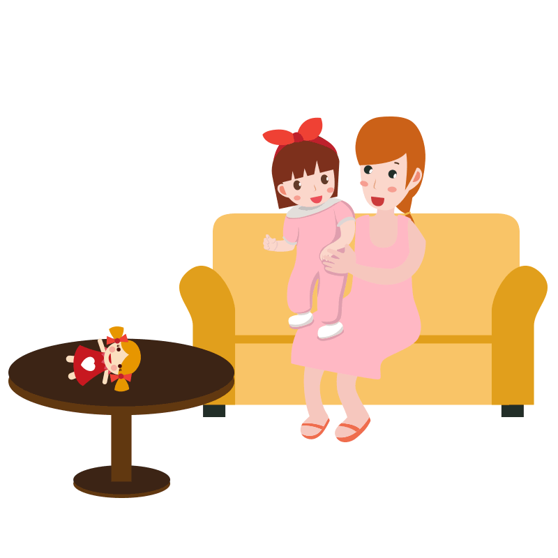
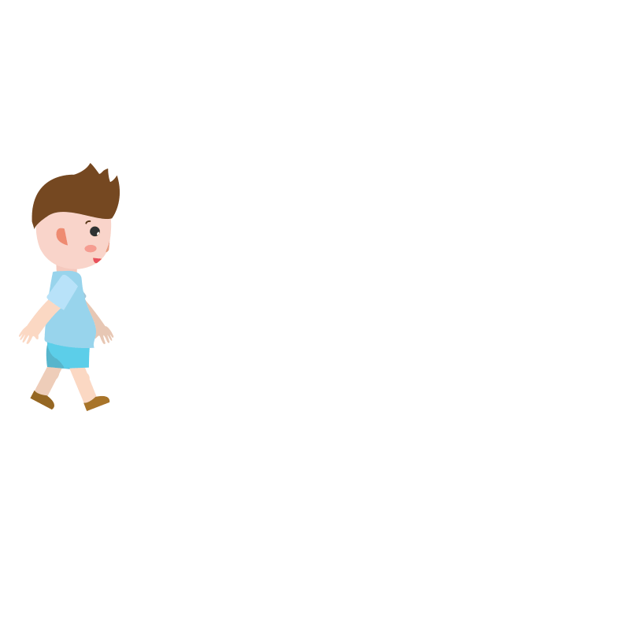
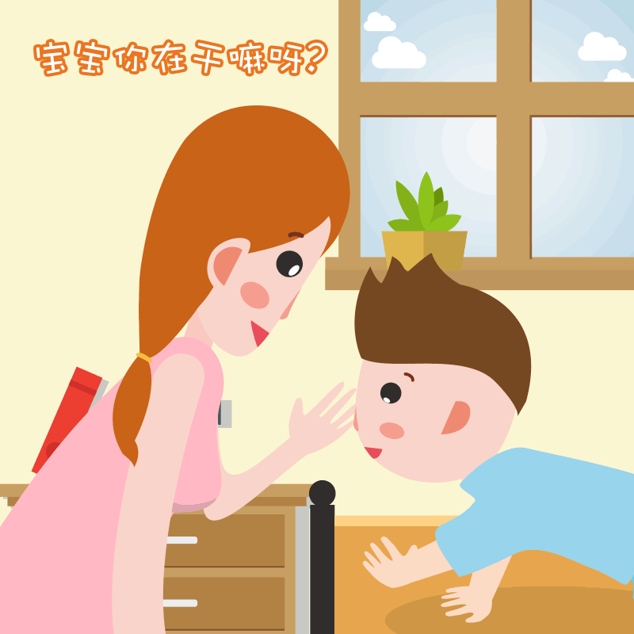

1. 如果您指向房间内的某样东西，孩子会看它吗？（例如，您指着一个玩具或一只动物，孩子会看这个玩具或这只动物吗？）
2. 您怀疑过孩子的听力有障碍（耳聋）吗？

3. 您的孩子会玩假装游戏吗？（例如，假装从空的杯子中喝水，假装打电话，假装喂娃娃或毛绒玩具？）

4. 您的孩子喜欢爬上爬下吗？（如家具、游乐场设施、或楼梯）
5. 您的孩子会在自己眼睛附近做一些奇怪的手指活动吗？（例如，您的孩子会在眼睛前摆动手指吗？）

6. 您的孩子会用一根手指指东西表示需要或寻求帮助吗？（例如，指着他/她够不到的一块点心或玩具）
7. 您的孩子会用一根手指指东西，向您展示有趣的东西吗？（例如，指向天空中的飞机或马路上的卡车）
8. 您的孩子对其他孩子感兴趣吗？（例如，您的孩子会看其他孩子，对他/她们笑，走向他/她们吗？）

9. 您的孩子会把东西拿给您，或举着东西给您看吗？不是寻求帮助，而只是分享。（例如，给您看花、毛绒玩具动物或玩具卡车）

10. 您叫孩子名字的时候，他/她会有反应吗？（例如，您叫他/她的名字，他/她会抬头看、说话或发出咿呀声、或者停下正在做的事吗？）

11. 您对您的孩子笑的时候，他/她也会对您笑吗？
12. 您的孩子会因为日常噪音而感到不安吗？（例如，您的孩子会因为电吹风或高分贝音乐而尖叫或哭闹吗？）

13. 您的孩子会走路了吗？
14. 当您跟孩子说话、玩耍或穿衣服时，他/她会与您对视吗？
15. 您的孩子会模仿您做的事吗？（例如，挥手再见、鼓掌或者发出有趣的声音）

16. 如果您转头看某样东西，您的孩子会转过头来试图了解您在看什么吗？

17. 您的孩子会试图让您去看他/她吗？（例如，您的孩子会看着您等待夸奖，或者说“看”、“看我”吗？）

18. 当您告诉您的孩子去做某事时，他/她能理解吗？（例如，如果您不用手指，您的孩子能理解“把书放在椅子上”或“给我拿拖鞋”吗？）

19. 如果发生了新鲜事，您的孩子会看您的脸去观察您的反应吗？（例如，如果他/她听到了奇怪或有趣的声音或看到了新玩具，他/她会看您的脸吗？）

20. 您的孩子喜欢被摇晃吗？（例如，在您的膝盖上摇晃或弹跳）